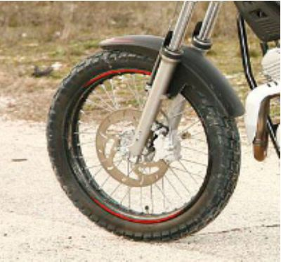

GURPILAK
Aurreko gurpila: Llantaren diametroa 19 '' -koa da. 50 c.c.-ko motorrak normalean txikiagoak eramten dituzte, baino Rieju-ren modelo honek beste modelo handiago batzuetatik piezak erabiltzen ditu (gurpilak, txasisa, eskulekua...).

Atzeko gurpila: Diskoen kasuan bezela, atzeko gurpila aurrekoa baino txikiagoa da, motor mota hau “offroad” edo “trail” deritzona delako. Kasu hontan, 16 '' ditu, eta neumatikoa aurrekoa baina lodiagoa da, karreteratik kanpo trakzio handiagoa izateko.
| Llantaren diametroa | Neumatikoaren marka | Neumatikoaren neurriak | |
| Aurreko gurpila | Brembo AJP | Disko bidezkoa | 220 mm |
| Atzeko gurpila | Brembo AJP | Disko bidezkoa | 200 mm |